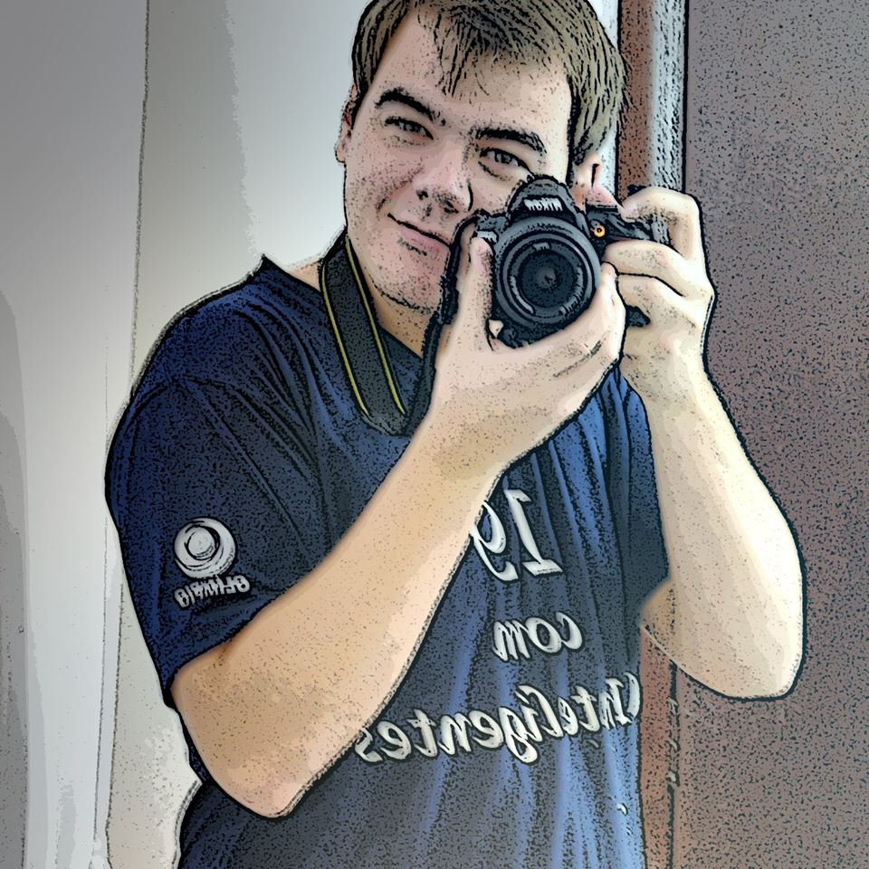

 (51) 9 9263-9842
(51) 9 9263-9842
 tailontegner@live.com
tailontegner@live.com
 @tailontegner
@tailontegner
 facebook.com/tailon.tegner/
facebook.com/tailon.tegner/
Tailon Silva
HTML | CSS | PHP | JavaScript | Mysql
Perfil
Profissional, estudante de desenvolvimento web, com interesse em programção, front-end e Marketing.
Busco todos os dias, em leituras, cursos e no desenvolvimento de projetos, adquirir mais conhecimento e melhorar cada vez mais meus trabalhos.
Contatos
Conhecimentos
HTML
css
JavaScript
PHP
Mysql
Projetos Realizados por mim nos estudos de Front-end e Programação.
Acompanhe alguns projetos que fiz durante estes estudos!
A ideia deste repositório é manter as versões dos projetos separadas, para que possamos acompanhar as melhorias feitas e a evolução dos projetos.